The marble bathroom
Stone and brass
Marble-look walls, a navy vanity and a freestanding bath, finished in brushed brass.
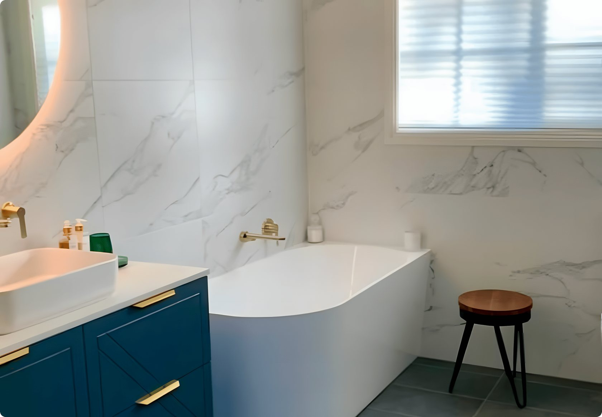
Luxe Bath & Design is Nick and AJ, two Sydney renovators who design and build every bathroom themselves. Every project is fully custom, full renovations start from $25,000, and the people you meet at your consultation are the people on site.
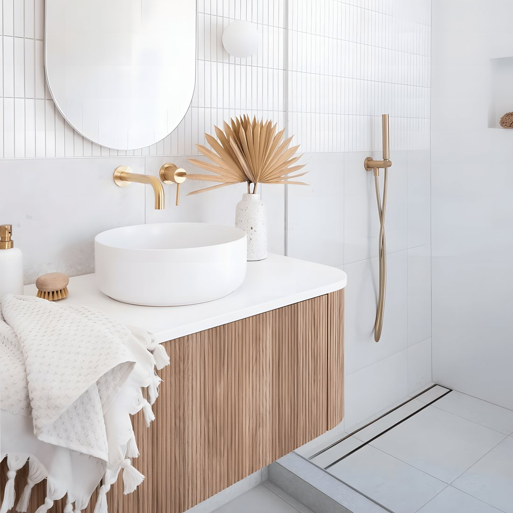
Stone and brass
Marble-look walls, a navy vanity and a freestanding bath, finished in brushed brass.

Warm timber
A double timber vanity, two round basins and brushed brass tapware against soft grey tiles.
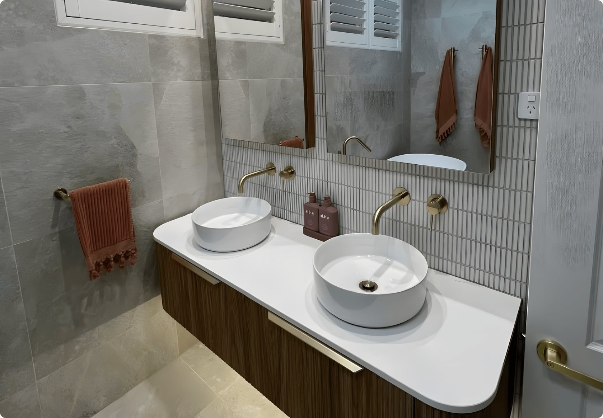
Soft sage
Sage green tiles, a terrazzo basin and brass tapware, with a freestanding bath under the window.
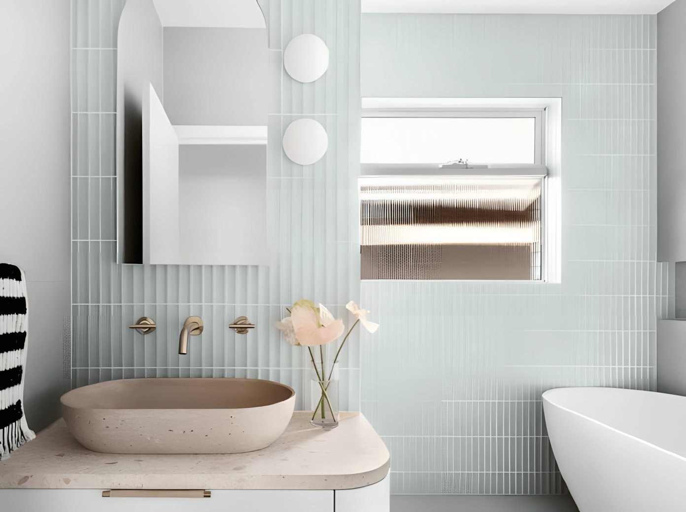
Timber and white
A warm timber vanity, a white basin and a brass towel rail against vertical white tiles.
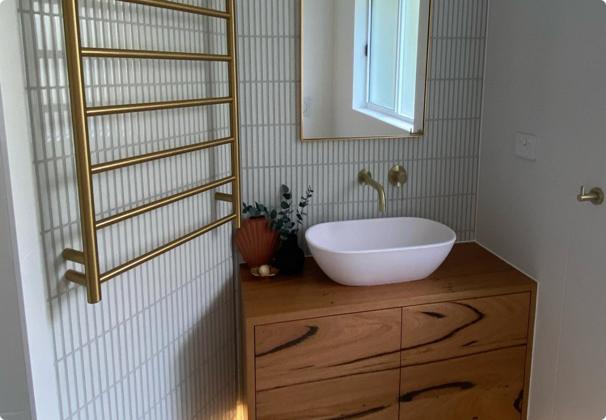
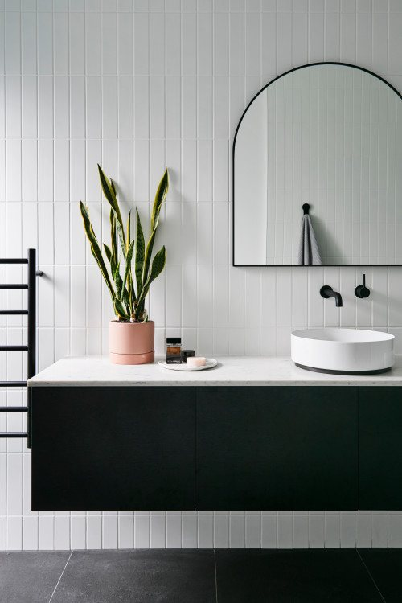
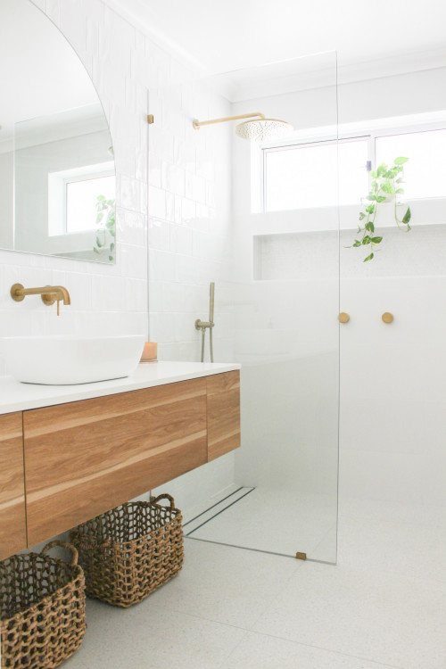
Three things that make renovating with us feel easy.
No chasing tradies or waiting for call-backs. Nick and AJ keep you in the loop from start to finish. One client said they got everything from daily progress photos to phone calls.
You get a detailed quote and timeline before any work starts, so you know what is included and when it will be done. Kim told us their job finished on time and on budget.
We protect your floors, walls and stairs and keep work areas tidy. One family had three bathrooms done in two stages, so they always had a bathroom that worked.
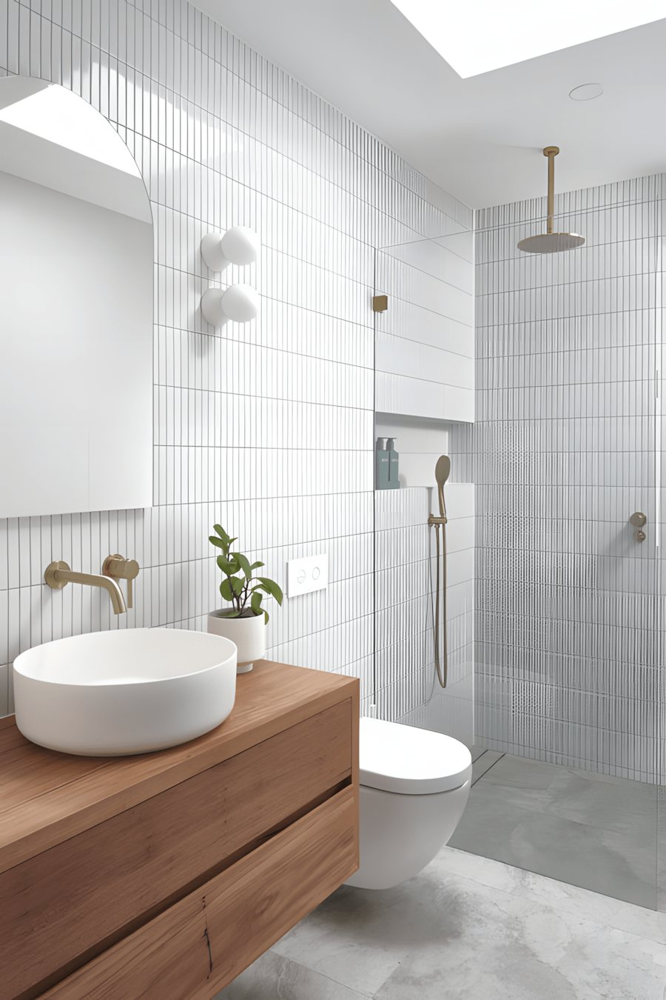
We renovate main bathrooms and ensuites across five Sydney regions.
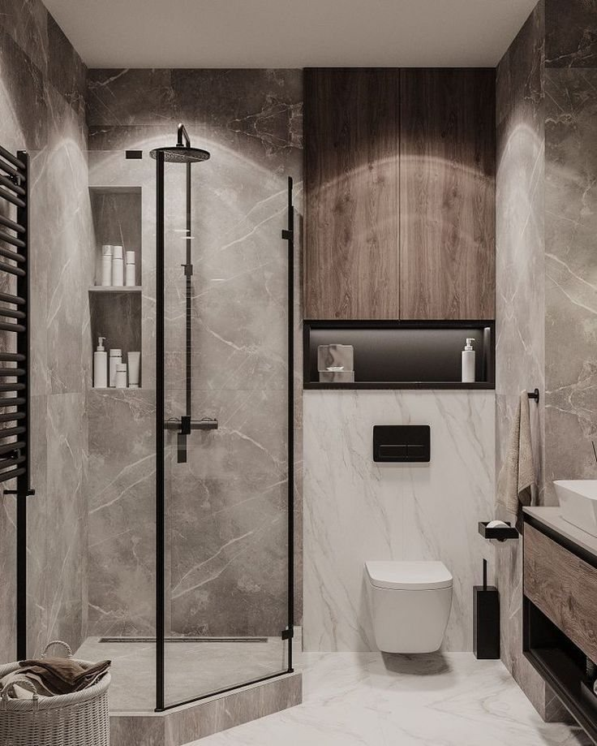
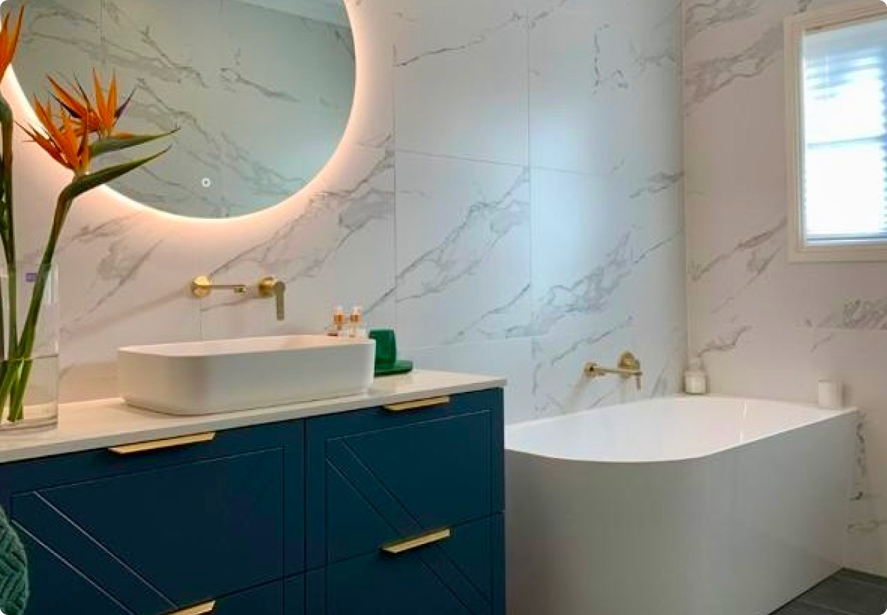
We loved AJ and Nick from the moment we met them. They advised us about layout and products we should consider for our two bathrooms and we felt supported from the beginning. Their Trades were lovely - everyone turned up on time, were very considerate and did a great job. AJ was in constant contact and checked the work at all stages. The bathrooms look stunning - like being in a hotel! This was one of the best, and least stressful reno experiences we’ve ever had.
A massive thank you to Nick and his Team at Luxe for the transformation of our bathroom and laundry! The work is of the highest quality. Nick is a perfectionist with keen eye for quality of finish. Nick is a terrific communicator and always kept us informed, from daily progress photos to phone calls to update us. He is very responsive, courteous and thoroughly professional. Our job was finished on time and on budget!
The workmanship was exceptional, attention to detail was outstanding, and everything was completed to such a high standard.
We especially appreciated that the renovation was completed in two stages, ensuring we always had a functioning bathroom.
The team at Luxe Bath & Design were exceptional.
AJ, Nick and their team did a fantastic job on a recent Reno.
I am so happy with the results of my ensuite renovation by Luxe Bath and Design.
Nick & AJ were really fantastic and helped give us two absolutely stunning bathrooms.
Very professional and experienced bathroom renovation by Nick and AJ.
Their attention to detail and commitment to quality is evident in every project they undertake.
At the initial consultation, they worked with my ideas and came up with a stunning design.
Working with Nick and the team was both easy and a pleasure.
Nick and AJ did an incredible job on my bathroom renovation.
Full bathroom renovations start from $25,000. Your final price depends on the size of the room, the layout and the finishes you choose. You get a detailed quote before any work starts, so there are no surprises later.
Most bathroom renovations take three to six weeks, depending on size and scope. If your home has more than one bathroom, ask us about doing the work in stages so you always have one to use.
Yes. We plan and manage the whole job: layout, waterproofing, tiling, joinery and fit-off. Nick and AJ check the work at every stage, so nothing is left to chance.
Yes. Luxe Projects & Design Pty Ltd holds NSW contractor licence 460103C (Kitchen, Bathroom and Laundry Renovator). Your work is also covered by NSW statutory warranties: 6 years for major defects and 2 years for other defects.
We renovate bathrooms across Sydney's Eastern Suburbs, Sutherland Shire, Inner West, Lower North Shore and Inner City.
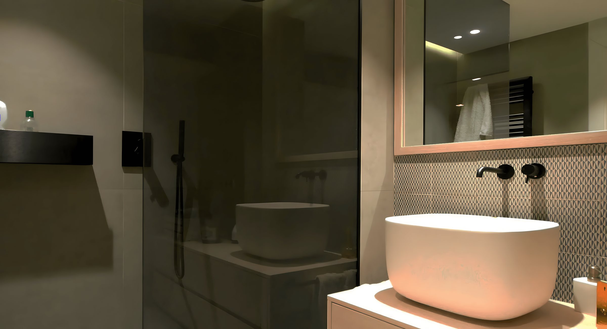
Tell us about your bathroom. Nick or AJ will call you to book a time that suits.
From $25,000full bathroom renovations
Free and no obligation.